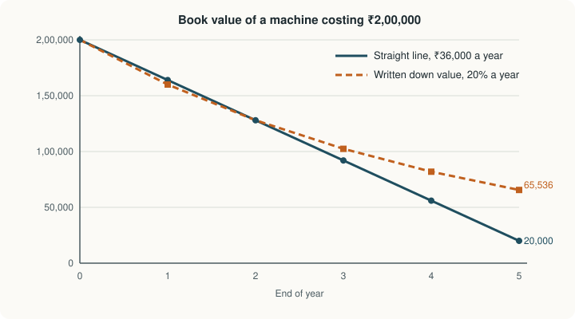

Chapter 7: Depreciation, Provisions and Reserves¶
Spreading the cost of assets over their lives, and setting amounts aside for losses and for the future
Learning outcomes
After studying this chapter you should be able to:
- Explain what depreciation is, why it is charged and what causes it.
- Compute depreciation by the straight line and written down value methods and compare them.
- Record depreciation by charging it to the asset account and through a provision for depreciation account, including part-year charges and the sale of an asset.
- Explain what a provision is and account for bad debts and a provision for doubtful debts.
- Explain what a reserve is, name the main kinds of reserve, and distinguish a provision from a reserve.
7.1 What depreciation is¶
A delivery van bought for ₹8,00,000 will serve a business for several years and then be sold for a fraction of its cost or scrapped. Its cost is not an expense of the year in which it was bought, because it helps to earn revenue in every year of its use. Nor can it be ignored, because by the end of its life the van will have been used up. The accounting answer is to spread the cost, less whatever is expected to be recovered at the end, over the years of use. The part charged to each year is depreciation.
Depreciation is best understood as a process of allocation, not of valuation. It allocates the cost of an asset to the periods that benefit from it, in keeping with the matching concept. The book value of an asset after depreciation (cost less accumulated depreciation) is the part of its cost not yet charged to profit; it is not an estimate of what the asset could be sold for.
Depreciation applies to tangible fixed assets with limited lives: buildings, plant and machinery, furniture, vehicles, computers. Land normally has an unlimited life and is not depreciated. The equivalent process for intangible assets such as patents is called amortisation, and for natural resources such as mines and quarries, depletion.
Causes of depreciation¶
- Wear and tear from use: machines wear out, vehicles run up kilometres.
- Passage of time: some assets, such as a lease or a patent, expire after a fixed period whether used or not.
- Obsolescence: a newer, better or cheaper asset makes the old one uneconomic before it wears out; computers are a common example.
- Depletion: a wasting asset such as a mine is used up as its contents are extracted.
- Accidents: damage that permanently reduces the asset's service.
Why depreciation must be charged¶
- To find the true profit. The asset is used up in earning revenue, so part of its cost is an expense of each year. Leaving it out overstates profit.
- To show a fair financial position. Showing a ten-year-old machine at its original cost would overstate the assets.
- To keep capital intact. Profit measured after depreciation can be withdrawn without eating into the capital invested in assets.
- To comply with law and standards. Accounting standards on property, plant and equipment, and company law, require depreciation to be charged.
Tax law also allows a deduction for depreciation, but it has its own rates and rules, which often differ from those used in the financial statements.
7.2 The amount to be depreciated¶
Three figures decide depreciation:
- Cost: the purchase price plus all costs needed to bring the asset to working condition: freight, installation, trial runs, import duties and non-refundable taxes.
- Residual (scrap or salvage) value: the amount expected to be recovered at the end of the asset's useful life, net of disposal costs.
- Useful life: the period over which the asset is expected to be used by the business, in years or in units of output.
The depreciable amount is cost less residual value. Under the accounting standards the residual value and useful life are estimates that should be reviewed periodically, and the method should reflect the pattern in which the asset's benefits are consumed. Company law also lays down indicative useful lives for classes of assets; the business may use different estimates where it can justify them.
7.3 The straight line method¶
Under the straight line method (also called the fixed instalment or original cost method), the same amount of depreciation is charged every year:
The rate is the annual depreciation as a percentage of cost. The book value falls by equal amounts each year and reaches the residual value at the end of the useful life.
7.4 The written down value method¶
Under the written down value method (also called the diminishing balance or reducing balance method), a fixed percentage is applied each year to the book value at the start of the year, that is, to the cost less all depreciation already charged. Because the book value falls each year, so does the depreciation. The charge is highest in the first year, when the asset is new and most productive and repairs are lowest, and falls as the asset ages and repairs rise; the total of depreciation plus repairs is therefore roughly even over the asset's life.
Under this method the book value never reaches zero. The rate that would bring cost \(C\) down to residual value \(S\) in \(n\) years is
which for a ₹2,00,000 asset with a residual value of ₹20,000 after 5 years is \(1 - 0.1^{0.2} = 0.369\), or about 36.9%. In practice a round rate is usually chosen.
Example 7.1 The two methods compared
A machine is bought on 1 April 2025 for ₹1,80,000; installation costs ₹20,000. Its useful life is 5 years and its residual value ₹20,000. Compute depreciation (a) by the straight line method and (b) by the written down value method at 20% per annum. The year ends on 31 March.
Cost = 1,80,000 + 20,000 = ₹2,00,000.
(a) Straight line. Annual depreciation = (2,00,000 − 20,000) ÷ 5 = ₹36,000, a rate of 18% on cost.
| Year | Book value at start (₹) | Depreciation (₹) | Book value at end (₹) |
|---|---|---|---|
| 2025-26 | 2,00,000 | 36,000 | 1,64,000 |
| 2026-27 | 1,64,000 | 36,000 | 1,28,000 |
| 2027-28 | 1,28,000 | 36,000 | 92,000 |
| 2028-29 | 92,000 | 36,000 | 56,000 |
| 2029-30 | 56,000 | 36,000 | 20,000 |
| Total | 1,80,000 |
(b) Written down value at 20%.
| Year | Book value at start (₹) | Depreciation at 20% (₹) | Book value at end (₹) |
|---|---|---|---|
| 2025-26 | 2,00,000 | 40,000 | 1,60,000 |
| 2026-27 | 1,60,000 | 32,000 | 1,28,000 |
| 2027-28 | 1,28,000 | 25,600 | 1,02,400 |
| 2028-29 | 1,02,400 | 20,480 | 81,920 |
| 2029-30 | 81,920 | 16,384 | 65,536 |
| Total | 1,34,464 |
Check: 2,00,000 − 1,34,464 = 65,536. At 20% the machine still has a book value of ₹65,536 after five years, well above its residual value; a rate of about 36.9% would have been needed to reach ₹20,000. By coincidence, both methods give the same book value (₹1,28,000) at the end of the second year.

| Point | Straight line method | Written down value method |
|---|---|---|
| Base | Original cost (less residual value) | Book value at the start of each year |
| Annual charge | Equal every year | Falls every year |
| Book value at end of life | Reaches residual value (or zero) | Never reaches zero |
| Charge plus repairs | Rises over time, as repairs rise | Roughly even over time |
| Suited to | Assets whose benefit is even over time: buildings, furniture, leases | Assets that lose value quickly or need more repairs with age: vehicles, plant, computers |
| Calculation | Simple | Slightly more work |
Table 7.1. Comparison of the two main methods.
Other methods exist, such as the units of production method, which charges depreciation in proportion to use (for example, machine hours or kilometres run), and the sum of the years' digits method. Whichever method is chosen should be applied consistently.
7.5 Recording depreciation¶
There are two ways to record depreciation in the books.
Method 1: charging depreciation to the asset account. Each year:
| Entry | Dr | Cr |
|---|---|---|
| For the year's depreciation | Depreciation A/c | Asset A/c |
| To close the depreciation account | Profit and Loss A/c | Depreciation A/c |
The asset account then shows the book value. Its weakness is that the original cost of the asset disappears from the ledger.
Method 2: creating a provision for depreciation (accumulated depreciation) account. Each year:
| Entry | Dr | Cr |
|---|---|---|
| For the year's depreciation | Depreciation A/c (or Profit and Loss A/c directly) | Provision for Depreciation A/c |
| To close the depreciation account | Profit and Loss A/c | Depreciation A/c |
The asset account stays at cost, and the provision account accumulates the total depreciation. The balance sheet shows the asset at cost less accumulated depreciation, which tells the reader both how much was spent and how much of it has been used up. This is the method used by companies.
Part-year depreciation¶
An asset bought or sold during the year is depreciated only for the months it was held, unless the business has a stated policy of charging a full year's depreciation in the year of purchase and none in the year of sale.
Sale of an asset¶
When an asset is sold, depreciation is first charged up to the date of sale. The book value on that date is compared with the sale proceeds: an excess of proceeds is a profit on sale and a shortfall a loss on sale, both taken to the profit and loss account.
Example 7.2 Machinery account with additions and a sale (Method 1)
Kamath Industries bought machine A on 1 April 2023 for ₹1,00,000 and machine B on 1 October 2024 for ₹60,000, both paid by cheque. Machine A was sold on 30 September 2025 for ₹70,000. Depreciation is charged at 10% per annum by the straight line method. Prepare the Machinery Account for the three years ending 31 March 2026.
Workings
| Year | Machine A (₹) | Machine B (₹) | Total depreciation (₹) |
|---|---|---|---|
| 2023-24 | 10,000 | — | 10,000 |
| 2024-25 | 10,000 | 3,000 (60,000 × 10% × 6/12) | 13,000 |
| 2025-26 | 5,000 (to 30 Sept, 6 months) | 6,000 | 11,000 |
Book value of A on 30 September 2025: 1,00,000 − 10,000 − 10,000 − 5,000 = ₹75,000. Sold for ₹70,000: loss ₹5,000.
Machinery Account
| Date | Particulars | ₹ | Date | Particulars | ₹ |
|---|---|---|---|---|---|
| 2023 Apr 1 | To Bank A/c (A) | 1,00,000 | 2024 Mar 31 | By Depreciation A/c | 10,000 |
| 2024 Mar 31 | By Balance c/d | 90,000 | |||
| 1,00,000 | 1,00,000 | ||||
| 2024 Apr 1 | To Balance b/d | 90,000 | 2025 Mar 31 | By Depreciation A/c (10,000 + 3,000) | 13,000 |
| 2024 Oct 1 | To Bank A/c (B) | 60,000 | 2025 Mar 31 | By Balance c/d | 1,37,000 |
| 1,50,000 | 1,50,000 | ||||
| 2025 Apr 1 | To Balance b/d | 1,37,000 | 2025 Sep 30 | By Depreciation A/c (A) | 5,000 |
| 2025 Sep 30 | By Bank A/c (sale of A) | 70,000 | |||
| 2025 Sep 30 | By Profit and Loss A/c (loss on sale) | 5,000 | |||
| 2026 Mar 31 | By Depreciation A/c (B) | 6,000 | |||
| 2026 Mar 31 | By Balance c/d | 51,000 | |||
| 1,37,000 | 1,37,000 | ||||
| 2026 Apr 1 | To Balance b/d | 51,000 |
The closing balance of ₹51,000 is the book value of machine B: 60,000 − 3,000 − 6,000.
Example 7.3 The same machinery in 2025-26 with a provision for depreciation (Method 2)
At 1 April 2025 the Machinery Account shows the cost of both machines, ₹1,60,000, and the Provision for Depreciation Account shows the accumulated depreciation, ₹23,000 (A ₹20,000; B ₹3,000). On a sale, the cost and the accumulated depreciation of the asset sold are transferred to a Machinery Disposal Account.
Machinery Account
| Particulars | ₹ | Particulars | ₹ |
|---|---|---|---|
| To Balance b/d | 1,60,000 | By Machinery Disposal A/c (cost of A) | 1,00,000 |
| By Balance c/d | 60,000 | ||
| Total | 1,60,000 | Total | 1,60,000 |
Provision for Depreciation Account
| Particulars | ₹ | Particulars | ₹ |
|---|---|---|---|
| To Machinery Disposal A/c (on A: 20,000 + 5,000) | 25,000 | By Balance b/d | 23,000 |
| To Balance c/d | 9,000 | By Depreciation A/c (A, 6 months) | 5,000 |
| By Depreciation A/c (B) | 6,000 | ||
| Total | 34,000 | Total | 34,000 |
Machinery Disposal Account
| Particulars | ₹ | Particulars | ₹ |
|---|---|---|---|
| To Machinery A/c | 1,00,000 | By Provision for Depreciation A/c | 25,000 |
| By Bank A/c (sale proceeds) | 70,000 | ||
| By Profit and Loss A/c (loss on sale) | 5,000 | ||
| Total | 1,00,000 | Total | 1,00,000 |
In the balance sheet at 31 March 2026: Machinery at cost ₹60,000, less accumulated depreciation ₹9,000 = ₹51,000, the same book value as under Method 1.
7.6 Provisions¶
A provision is an amount charged against profit to cover a known liability or an expected loss whose amount cannot be determined exactly. Its key features are that it is a charge against profit (it must be made whether there is a profit or not) and that it relates to something that has already happened or is already known.
Common examples are the provision for depreciation (Section 7.5), the provision for doubtful debts, the provision for repairs and renewals, and the provision for taxation. Under the accounting standards, a provision in the strict sense is a liability of uncertain timing or amount, recognised when there is a present obligation from a past event, an outflow is probable, and the amount can be reliably estimated; the term is also used in everyday practice for allowances that reduce an asset, such as the provision for doubtful debts.
Bad debts and the provision for doubtful debts¶
Some customers who buy on credit never pay. A debt that is certainly irrecoverable (the customer is insolvent or cannot be traced) is a bad debt: it is written off by debiting Bad Debts Account and crediting the customer, and Bad Debts is charged to the profit and loss account.
Other debts are doubtful: they may or may not be paid. Prudence requires that the expected loss be provided for now, in the year in which the sales were made. A provision for doubtful debts is created, usually as a percentage of the debtors outstanding at the year end (after writing off bad debts), based on past experience or a review of individual accounts. In the balance sheet the provision is deducted from debtors.
Each year the provision is adjusted to the new required figure. The charge to the profit and loss account is:
If the result is negative, the excess provision is written back as a credit to the profit and loss account.
Example 7.4 Provision for doubtful debts over two years
Sen Traders' year ends on 31 March. It maintains a provision for doubtful debts of 5% of debtors.
- 2024-25: bad debts written off ₹3,000; debtors at the year end, after writing off bad debts, ₹1,80,000. There was no provision before.
- 2025-26: bad debts written off ₹5,000; debtors at the year end, after writing off bad debts, ₹2,10,000.
Bad debts are transferred to the provision account.
2024-25. Required provision = 5% × 1,80,000 = ₹9,000. Charge to profit and loss = 3,000 + 9,000 − 0 = ₹12,000.
2025-26. Required provision = 5% × 2,10,000 = ₹10,500. Charge = 5,000 + 10,500 − 9,000 = ₹6,500.
Provision for Doubtful Debts Account
| Date | Particulars | ₹ | Date | Particulars | ₹ |
|---|---|---|---|---|---|
| 2025 Mar 31 | To Bad Debts A/c | 3,000 | 2025 Mar 31 | By Profit and Loss A/c | 12,000 |
| 2025 Mar 31 | To Balance c/d | 9,000 | |||
| 12,000 | 12,000 | ||||
| 2026 Mar 31 | To Bad Debts A/c | 5,000 | 2025 Apr 1 | By Balance b/d | 9,000 |
| 2026 Mar 31 | To Balance c/d | 10,500 | 2026 Mar 31 | By Profit and Loss A/c | 6,500 |
| 15,500 | 15,500 | ||||
| 2026 Apr 1 | By Balance b/d | 10,500 |
Balance sheet extract at 31 March 2026: Debtors ₹2,10,000, less provision for doubtful debts ₹10,500 = ₹1,99,500.
A bad debt written off in an earlier year that is later recovered is an income of the year of recovery: Bank A/c Dr; To Bad Debts Recovered A/c.
7.7 Reserves¶
A reserve is an amount set aside out of profits, not to meet a known liability or loss, but to strengthen the financial position of the business, to provide for unknown contingencies, to finance expansion, or to equalise dividends. A reserve is an appropriation of profit, not a charge against it: it is made only when there is a profit, after the profit has been found. It belongs to the owners and is shown in the balance sheet with capital (for a company, under "Reserves and surplus").
The main kinds:
- Revenue reserves are created out of revenue profits and can be used for any purpose, including paying dividends.
- A general reserve is not earmarked for any purpose.
- A specific reserve is set aside for a stated purpose: a dividend equalisation reserve, a debenture redemption reserve, a reserve for replacement of assets.
- Capital reserves arise from capital profits, such as a profit on the sale of a fixed asset or on the reissue of forfeited shares (Chapter 11), or a premium received on the issue of shares (which company law treats as a separate securities premium). They are generally not available for distribution as dividend.
- A secret (hidden) reserve arises when assets are deliberately understated or liabilities overstated, so that the reserve does not appear in the balance sheet. Deliberately creating hidden reserves conflicts with the aim of a true and fair view, and modern standards and company law do not permit it in published accounts.
A reserve fund is a reserve whose amount has been invested outside the business, for example in government securities, so that the cash will be available when needed.
Example 7.5 Transfer to a general reserve
A sole trader's net profit for 2025-26 is ₹2,00,000. He decides to transfer 20% of the profit to a general reserve before crediting the rest to his capital.
| Particulars | Dr (₹) | Cr (₹) |
|---|---|---|
| Profit and Loss A/c ... Dr | 40,000 | |
| To General Reserve A/c | 40,000 | |
| (Being 20% of the profit transferred to general reserve) | ||
| Profit and Loss A/c ... Dr | 1,60,000 | |
| To Capital A/c | 1,60,000 | |
| (Being the balance of profit transferred to capital) |
The general reserve of ₹40,000 is shown on the liabilities side of the balance sheet next to capital. Both still belong to the owner; the reserve simply keeps that part of the profit in the business.
| Point | Provision | Reserve |
|---|---|---|
| Nature | A charge against profit | An appropriation of profit |
| Purpose | To meet a known liability or expected loss | To strengthen the position or meet future needs |
| When made | Whether there is a profit or a loss | Only out of profit |
| Effect on profit | Reduces the profit | Does not reduce the profit; it divides it |
| Balance sheet | Deducted from the asset concerned, or shown as a liability | Shown with capital (reserves and surplus) |
| Required by | Prudence, accounting standards | Decision of the owners, or law in particular cases |
| Available for dividend | No | Revenue reserves yes; capital reserves generally no |
Table 7.2. Provisions and reserves compared.
Caution
Do not confuse a reserve with cash. A reserve is a part of the owners' claim on the assets; it is on the liabilities side of the balance sheet and does not mean that a matching sum of money is sitting in the bank. Only a reserve fund is backed by specific investments.
7.8 Summary¶
Summary
- Depreciation allocates the cost of a fixed asset, less its residual value, over its useful life. It is caused by wear and tear, passage of time, obsolescence and depletion, and must be charged to find true profit and a fair position.
- Straight line: (cost − residual value) ÷ life, the same each year. Written down value: a fixed rate on the opening book value, falling each year and never reaching zero.
- Depreciation is recorded either by crediting the asset account or by crediting a provision for depreciation account, which keeps the asset at cost. Assets bought or sold during the year are depreciated for the months held; on sale, book value is compared with proceeds to find the profit or loss.
- A provision is a charge against profit for a known liability or expected loss. The charge for doubtful debts is bad debts + new provision − old provision.
- A reserve is an appropriation of profit to strengthen the business. Reserves are revenue (general or specific) or capital; secret reserves are not permitted in published accounts.
7.9 Exercises¶
Exercise 1
A vehicle costs ₹6,00,000, has a useful life of 8 years and a residual value of ₹40,000. Find the annual depreciation and the rate on cost under the straight line method.
Answer
(6,00,000 − 40,000) ÷ 8 = ₹70,000 a year. Rate = 70,000 ÷ 6,00,000 × 100 = 11.67% on cost.
Exercise 2
A computer system costing ₹1,50,000 is depreciated at 30% per annum on the written down value. Find the depreciation for each of the first three years and the book value at the end of the third year.
Answer
Year 1: 30% × 1,50,000 = ₹45,000; book value ₹1,05,000. Year 2: 30% × 1,05,000 = ₹31,500; book value ₹73,500. Year 3: 30% × 73,500 = ₹22,050; book value ₹51,450. Check: 1,50,000 − (45,000 + 31,500 + 22,050) = 51,450.
Exercise 3
Furniture costing ₹50,000 was bought on 1 July 2025. Depreciation is 10% per annum on cost, and the year ends on 31 March. What is the depreciation for 2025-26?
Answer
The furniture is held for 9 months (July to March): 50,000 × 10% × 9/12 = ₹3,750.
Exercise 4
A machine bought on 1 April 2023 for ₹80,000 is depreciated at 15% per annum by the written down value method. It is sold on 31 March 2026 for ₹45,000 after charging that year's depreciation. Find the profit or loss on sale.
Answer
2023-24: 12,000, book value 68,000. 2024-25: 10,200, book value 57,800. 2025-26: 8,670, book value 49,130. Sale proceeds 45,000: loss ₹4,130.
Exercise 5
The provision for doubtful debts at 1 April 2025 was ₹6,000. During 2025-26 bad debts of ₹4,500 were written off. Debtors at 31 March 2026 (after writing off) were ₹1,40,000, and the provision is to be 4%. Find the charge to the profit and loss account and the net debtors in the balance sheet.
Answer
New provision = 4% × 1,40,000 = ₹5,600. Charge = 4,500 + 5,600 − 6,000 = ₹4,100. Net debtors = 1,40,000 − 5,600 = ₹1,34,400.
Exercise 6
State whether each is a provision or a reserve: (a) amount set aside for expected repairs to a building already damaged; (b) 10% of profit kept aside to finance future expansion; (c) amount set aside for depreciation of machinery; (d) profit on the sale of land kept aside and not distributed.
Answer
(a) provision (an expected cost of a known event); (b) reserve (general or specific revenue reserve); (c) provision; (d) capital reserve.
7.10 Quiz¶
Check your understanding of Chapter 7
Exercise 1
Depreciation is best described as
- a process of valuing assets at market price
- a process of allocating the cost of an asset over its useful life
- a fund of cash kept for replacing assets
- an appropriation of profit
Answer
a process of allocating the cost of an asset over its useful life
Exercise 2
Cost ₹1,00,000, residual value ₹10,000, useful life 9 years. What is the annual straight line depreciation, in rupees?
Answer
10000 / 10,000 / ₹10,000
Exercise 3
Under the written down value method, the annual depreciation
- stays the same every year
- rises every year
- falls every year
Answer
falls every year
Exercise 4
A reserve differs from a provision because a reserve is
- a charge against profit
- an appropriation of profit
- deducted from an asset in the balance sheet
- made even when there is a loss
Answer
an appropriation of profit
Exercise 5
Bad debts ₹2,000; new provision required ₹7,000; existing provision ₹5,000. What is the charge to profit and loss, in rupees?
Answer
4000 / 4,000 / ₹4,000
2,000 + 7,000 − 5,000 = 4,000.
Exercise 6
Which asset is normally not depreciated?
- Building
- Land
- Furniture
- Motor vehicle
Answer
Land